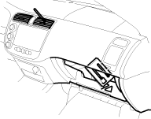

Performance Test
|
|
 CAUTION
CAUTION
The performance test will help determine if the air conditioner system is operating within specifications.
- Use only a gauge set for refrigerant HFC-134a (R-134a).
- Use a vacuum pump adapter which is equipped with a check valve to prevent the backflow of the vacuum pump oil.
If accidental system discharge occurs, ventilate work area before resuming service.
R-134a service equipment or vehicle air conditioning systems should not be pressure tested or leak tested with compressed air.
Additional health and safety information may be obtained from the refrigerant and lubricant manufacturers.
- Connect a R-134a gauge set as shown.
THREE VALVE GAUGE:

- CHECK VALVE
- LOW-PRESSURE VALVE
- EVACUATION VALVE
- HIGH-PRESSURE VALVE
- VACUUM PUMP
- HIGH-PRESSURE QUICK JOINT
- LOW-PRESSURE QUICK JOINT
TWO VALVE GAUGE:

- CHECK VALVE
- LOW-PRESSURE VALVE
- HIGH-PRESSURE VALVE
- EVACUATION STOP VALVE
- VACUUM PUMP
- HIGH-PRESSURE QUICK JOINT
- LOW-PRESSURE QUICK JOINT
- Insert a thermometer in the centre air vent. Determine the relative humidity and air temperature.
NOTE: LHD type is shown, RHD type is symmetrical.

- Test conditions:
Avoid direct sunlight.
- Open the hood.
- Open the front doors.
- Set the temperature control dial on MAX COOL, the mode control dial on VENT and the recirculation control switch on RECIRCULATE.
- Turn the A/C switch on and the fan switch on MAX.
- Run the engine at 900 (min-1).
- No driver or passengers in vehicle.
- After running the air conditioning for 10 minutes under the above test conditions, read the delivery temperature from the thermometer in the centre air vent, the intake temperature near the blower unit behind the glove box and the high and low system pressure from the A/C gauges.